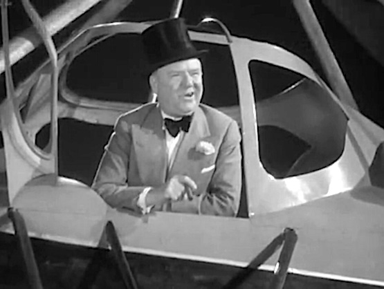

GYR-O Pages · the build
How a GYR-O website gets built, from one sentence to a working address.
One sentence, the first line of everything. If it is not clear yet, you are asked a few plain questions until it is.
A few words of plain English ending in .online, that read like what the site is: worland-dog-laws.online.
The only step that costs money, so the only step that stays yours: a few dollars, in your own account.
The pages, the hosting, the address and the padlock in the browser bar are set up for you. No server, nothing to log in to, nothing to update.
Seven plain answers to the questions your readers ask, your sources in the middle, the detail last. An AI drafts them with you; you decide what they say.
To change a line, edit it and publish. The words, the look and the address all belong to you.
Once a site is up, it is kept the same way every time: one task, one site, one log, shown on the four live GYR-O sites.
GYR-O stands for its colors: green, yellow and red for the three columns every reader sees, and sometimes orange. Orange is the color of the build. On a finished site it appears once, in the “built by Auto-Gyro” link that brought you here.
An autogyro flies on a rotor that the passing air keeps turning, which is close to how a GYR-O site stays up: no engine room, almost no cost. The name also tips its hat to W. C. Fields, who drops in by autogyro in the 1933 comedy International House.
